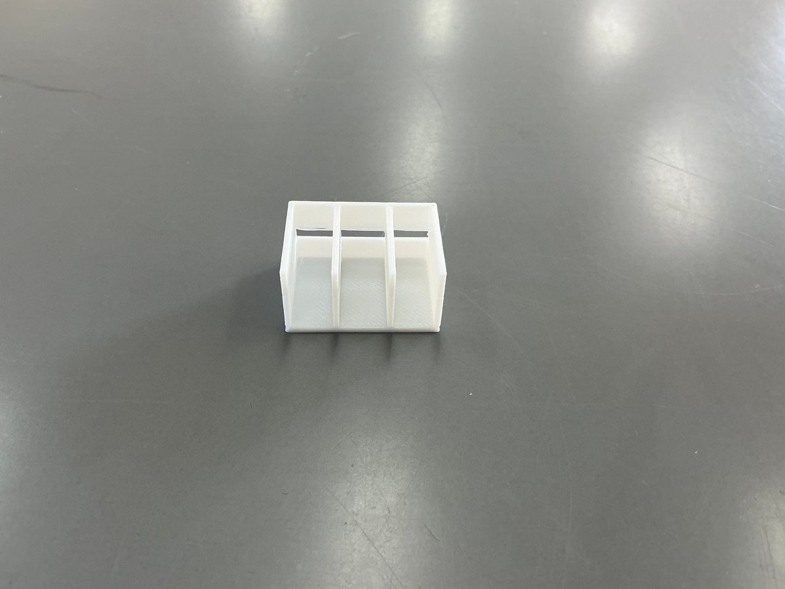
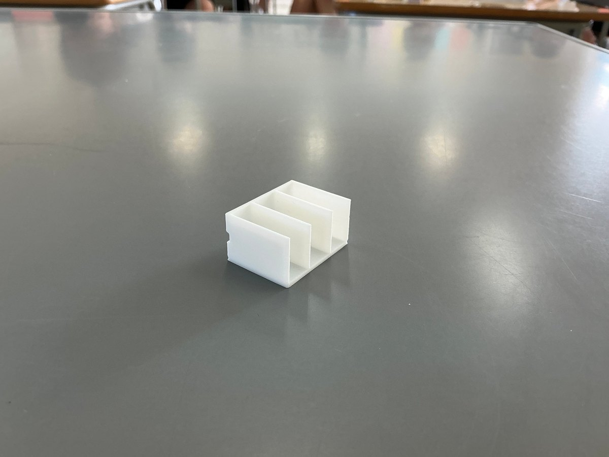

背景
正直に書くと、これまでの私の授業では、生徒は教科書の例を参考に「想像の範囲」で課題を設定していました。実際に現場を見て、誰かに話を聞いて見つけた問題ではないので、教科書とほとんど同じ課題になる。中には、まったく同じものを作る生徒もいました。当事者意識のない題材です。
原因は生徒ではなく、私自身にありました。「実習費の範囲内で、成果物は必ず家庭に持ち帰らせる」——誰に決められたわけでもないこの前提を、私は長年、見えない縛りとして自分に課していたのです。
しかし考えてみれば、困ってもいないのに無理に課題を設定させ、誰の願いでもない物を作らせることは、ものづくりの原点に反します。不要なものの製作からは、コンピテンシーベースの学びは生まれません。そこで発想を変えました。実習費は「持ち帰る物への対価」ではなく、「探究の学びそのものへの対価」である、と。
保護者から疑問の声が上がるかもしれません。そのときはこの考えを説明し、責任を果たす——そう先に整理してから、思い切って踏み出しました。実はこれは、次期学習指導要領を待つまでもなく、以前からやりたかったことでした。
なお、この転換にコストの増加は伴いません。従来と同じ実習費の範囲で実施できています。持ち帰る物がない場合があることは事前に生徒へ説明し、個人で取り組むかグループで取り組むかを選ぶ際の判断材料の一つにしています。

ねらい
このPBLでは、子どもたちが生活や学びの場にある「困った」を発見し、改善の方向性を自分たちの言葉で整理し、説明できるようになることを目指しました。便利なものを作ることだけでなく、課題を見つける力、情報を整理する力、他者に伝える力、そして自らの判断で選ぶ力を育てることを重視しました。
やったこと
最初に、学校と家庭のどちらでも起こりうる「困った」を、子どもたち自身が自由に出し合いました。次に、似た内容をまとめ、改善の方向性を話し合いながら、アイデアを具体化しました。
学習の進め方としては、問いを立てること、情報を集めること、試しながら修正すること、他者に伝えることを大切にしました。完成形だけでなく、試行錯誤の過程そのものを学びとして扱いました。
この授業では、まず「不便探し」から始めました。日常の中にある小さな不便を見つけ、そこから「誰が、どんな場面で、どのように困っているのか」を考えることを通して、問題発見の力を育てました。
そのあと、教室内での発問をもとに、周囲の人への「インタビュー」を行い、現状の気持ちや困りごとを言葉にする活動を組みました。最後に、見つかった課題を「願い・安全・環境・経済」という4つの視点で整理し、改善の方向性を言語化する流れにしました。
この4つの視点は、ただ便利なものを作るだけではなく、使う人の願い、安心して使えること、生活環境への配慮、無駄を減らすことを含めて、最適化の判断基準にできるようにしたものです。
第2時では、見つけた課題をもとに、どのような改善案が考えられるかを班ごとに整理しました。アイデアを出し合い、実現の可能性を確認しながら、課題の解決に向けた構想を練る時間にしています。
ここまでの経過
授業を進める中で、子どもたちの姿に変化が見え始めました。従来のように「与えられた課題を解く」受け身の学習者ではなく、生活の中から改善したいことを見つけ出し、自分たちの言葉で問いを立てる存在へと変わっていきました。
家庭にも学びを広げる子どもも増えました。学校の中だけで終わるのではなく、家の中でも「困っていることはないか」と考え、身近な場面を見直す学びへと拡張していきました。
「あまり目に入らないところを意識すると、複数の課題が見つかった」
（生徒の振り返りより）
また、構想を整理する場面では、生成AIを思考の壁打ち相手として活用し、アイデアを言葉にしていく姿も見られました。
これから
次の段階では、設計の過程をより深めたいと考えています。改善案を具体化し、試作品だけでなく、使う場面を想定した設計を行い、検証の視点を持って進めることを重視します。
そのために、3Dプリントを使った検証も組み込み、試作の精度や使い勝手を確認しながら、学びをさらに実感できる形にしていきます。さらに、教頭として自ら率先垂範し、職員にもこの考え方を広げていきたい。小さな実践を積み重ねることで、学校全体の学びの質を少しずつ変えていきたいと考えています。
── ここから下は、2026年10月時点の追記です ──
上に書いた構想は、その後こう進みました。全22時間のうち、設計・試作フェーズを終え、製作実習に入っています。
全22時間の流れ
第3時：課題を一つに決める
問題発見フェーズの仕上げです。それまでに挙げた課題の中から、自分が本気で取り組みたいものを1つに決め、設計書を完成させます。
絞り込みは4ステップにしました。課題を全部リストアップし、4つの視点で自分で絞り、ペアで見せ合って意見をもらい、設計書に打ち込む。この「自分で絞る」場面に、生成AIとの対話を組み込みました。
全校生徒を対象にした生成AIの研修を行った直後でもありました。研修では「出てきた答えを使えるか使えないかは、自分で判断する」と話しています。それを実際にやってみる場にもなりました。
「AIと話し、3Dプリンターをどこで使うか迷っていたけど、話した結果、角に使うことによって安全性が高まるということがわかりました。そこには目がいかなかったので、良い案が良かったです。」
（生徒の振り返りより）
「そこには目がいかなかった」。この一言が、生成AIの使いどころを言い当てていると思います。答えを出してもらったのではなく、自分では見ていなかった方向を示してもらった。そのうえで採用するかどうかは本人が決めています。
第4〜9時：CADで設計し、1/10模型で確かめる
設計・試作フェーズには6時間を充てました。3DCADの操作を覚え、1200mmのパイン材をどう使うかを考えながら形にしていきます。材料取り図と組立図（正投影図）まで出力します。
そして、できあがった設計を1/10の模型として3Dプリンタで出力しました。


模型を出す目的は、当初「設計のミスや無駄を見つけること」でした。寸法が合わない、板が足りない、組み立てられない。そうした失敗を、木材を切る前に見つけるためです。
ところが、生徒の振り返りを読んで、考えが変わりました。
「模型を見てみて気づいたことは、ミスはなかったけれど、安全性の観点でみると角が多く危ないことが模型を見て気づきました。なので、組み立てる前に角を丸くする工程を入れて、さらに利便性や安全性をあげていきたいです。」
（生徒の振り返りより）
「そこで安全性があまりなっていないので、角を丸くして安全性を高めようと思いました。」
（生徒の振り返りより）
「ミスはなかったけれど」。ここが大事なところです。寸法は合っていた。設計としては成立していた。それでも、手に取ってみて問題を見つけている。
見つけた問題は「安全性」でした。第1時に渡した4つの視点のひとつです。つまり模型は、設計が正しいかを確かめる道具としてではなく、4つの視点で自分の設計を評価し直す道具として働いていたことになります。
画面の中のCADでは、角は線でしかありません。手のひらに載せて初めて「これは当たったら痛い」と感じられる。評価の観点を持っていたからこそ、その感覚が「安全性の問題」という言葉になったのだと思います。視点を先に渡しておくことと、手で触れられるものを作ること。この二つが噛み合った場面でした。
生徒は「私のものづくり設計書」というシートに、設計の過程を記録していきます。その中に、4つの視点それぞれについて自分の工夫を書く欄と、どの視点に重点を置くかを選ぶ欄を設けました。
| 視点 | 自分の工夫 |
|---|---|
| 社会の要求 | 本・漫画を一度にたくさん持っていける |
| 安全性 | どこを持ってもいいように、釘を多方面に打って強度を上げる |
| 環境面 | 自分にちょうどいい大きさに設計したため、使い切ることは難しそう |
| 経済性 | 本・漫画が入るちょうどいい大きさにした |
| 重点を置く視点 | 経済性 |
| どう最適化したいか | 自分だけでなく、家族全員が使いやすいよう、適切な大きさになるよう作りたい |
注目したいのは環境面の記述です。「使い切ることは難しそう」と書いています。自分の設計の弱点を、隠さずに書いている。
4つすべてを満たすことはできません。どれかを立てれば、どれかが引っ込む。それがトレードオフです。全部できたことにするより、何を取って何を諦めたかを自覚しているほうが、技術の学習としては深い。この欄は、それを言葉にさせるために置いています。
第10時〜：製作実習が始まりました
ここからが、木材を扱う11時間です。安全に道具を使うルールを確認し、けがき（材料に線を引く作業）から始めました。先週その1時間目を終え、次回でけがきが終わる見込みです。
CADで1mm単位まで詰めた設計が、実際の木材でどうなるか。設計どおりに切れるか、組み立てられるか。ここから先は、画面の中では起きなかったことが起きるはずです。
そして第21〜22時には、作ったものを実際に使ってもらい、ユーザーに評価してもらって、動画で発表します。「本当に誰かの役に立ちそうか」という最初の問いに、自分で答えを出す時間です。
ここまでの手応え
このプロジェクトで試したかったのは、評価の観点を先に渡しておくと、生徒は自分で考え続けられるのではないかということでした。
4つの視点は、課題を選ぶときの道具として渡したものです。しかし生徒は、それを模型を手に取るときにも、生成AIに相談するときにも、設計書に自分の弱点を書くときにも使っていました。一度渡した枠組みが、場面を変えて働き続けている。
「背景」に書いたとおり、この単元は、持ち帰る物を前提にするのをやめたところから始まりました。作ることを目的から外したぶん、考える時間を厚く取れています。その判断は、いまのところ間違っていなかったと感じています。
製作実習が終わったら、また書き足します。